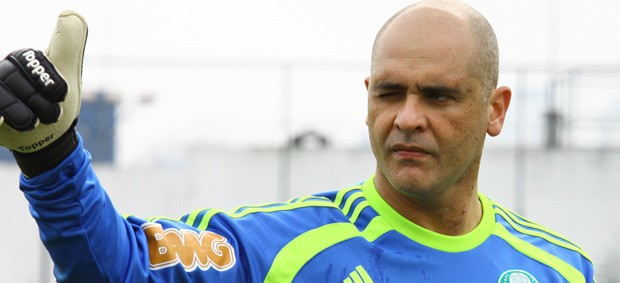

Jogo em Belém do Pará. O elenco inteiro do Palmeiras descansava no hotel, já que não havia nada para se fazer na cidade. Amaral surge com a solução para o marasmo que acometia os companheiros. - Gente, na rua de baixo tem um forró que eu acho que pode ser uma boa. Chama-se Forró do Gérson, dá até para ir a pé. Vamos dar uma conferida? – sugeriu Amaral. Os jogadores logo se animaram e partiram em bando para a tal casa noturna. Mas chegando lá... - Cara, chegamos lá estava fechado. Tudo escuro. A gente começou a perguntar se era ali mesmo o lugar, e o Amaral falou que era. Mas não era "Forró do Gérson", e sim "Forro de Gesso". Foi inacreditável – relembra o goleiro Sérgio.
No começo da carreira, o goleiro Marcos chegou a morar com o colega de posição Sérgio, que era recém-casado. - Teve um dia que a gente voltou de um treino e eu reclamei para a minha esposa que ela não havia feito feijão. Ela ficou tão brava que jogou um pote inteiro na minha cara – conta Sérgio. Assustado com a reação da patroa do companheiro, Marcos correu para fora do apartamento. Voltou várias horas depois e, para a surpresa dele, Sérgio não havia brigado com a mulher. O goleiro simplesmente recolheu os grãos de feijão e almoçou o que sua mulher havia preparado. - Quando o Marcos chegou, ficou me zoando até umas horas porque eu não briguei com ela. Hoje ele fica contando essa história para todo mundo. Mas eu digo sempre que a sorte da minha mulher é que ela me jogou feijão cru, porque se fosse cozido... – brinca o goleiro.
O dinheiro do bicho estava sumindo. Os jogadores do Palmeiras não estavam nada felizes com isso. - Não me lembro bem quando isso aconteceu, só sei que quando o dinheiro do bicho estava sob a responsabilidade de um tal diretor aí, sumia sempre. Aí me elegeram, como capitão do time, como o guardião das premiações – diz César Sampaio. O bicho chegava a 60 mil dólares, somando o prêmio de cada jogador. - Imagine aquela grana toda em cima da minha cama, em bolinhos de mil? Aí eu chamei o Cléber, né? Era muita responsabilidade para um só. Mas o negão era desconfiado que só, gritou feito louco quando viu o dinheiro – conta. Com medo de mais um chá de sumiço, César sugeriu ao companheiro uma reza em cima do dinheiro. - Pedi para ele me ajudar a orar. E o negão não fechava o olho,bicho! E o medo da grana desaparecer outra vez? Aí eu resolvi que o melhor realmente era rezar de olho aberto. Foi a primeira e única vez que eu fiz isso na vida. Mas foi melhor assim, porque pensa bem: Se some milzinho ali... cobrar o Cléber ia ser difícil – brinca.